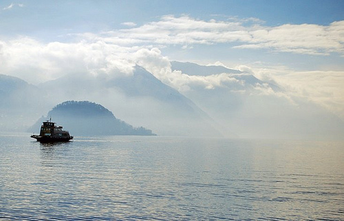
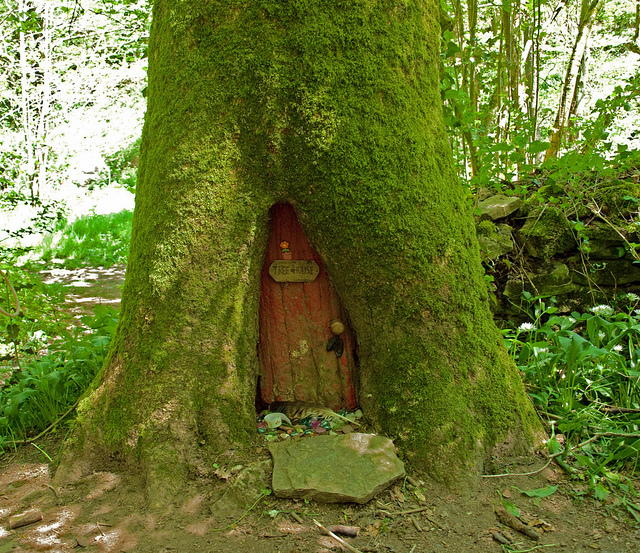
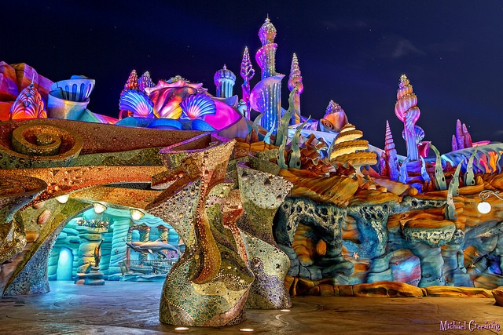
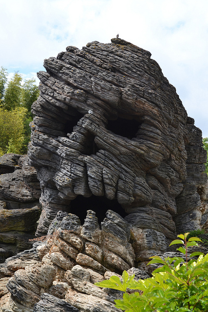

Neverland
Take a flight to Neverland! Just follow the second star to the right and straight on until morning. This small island is perfect for people refusing to grow up while getting a taste of some magical elements. Make sure to look for some of the Lost Boys during your time there.
Looking for the perfect place to stay in Neverland? Why not try the Home Under the Ground? Get there by sliding down a hollowed tree trunk, one for each room! Just stay away from Tinker Bell's private apartment.
Food & Drink
Spend your night out at Mermaids' Lagoon. This bar is located by Marooners' Rock - one of the most dangerous places in Neverland. You'll be safe as long as you don't have too many Malibu Bay Breezes!
Exotic cuisine can be found at popular pirate hangout Skull Rock. You could get your traditional surf and turf but why not try something a little different? Ever had fried crocodile?